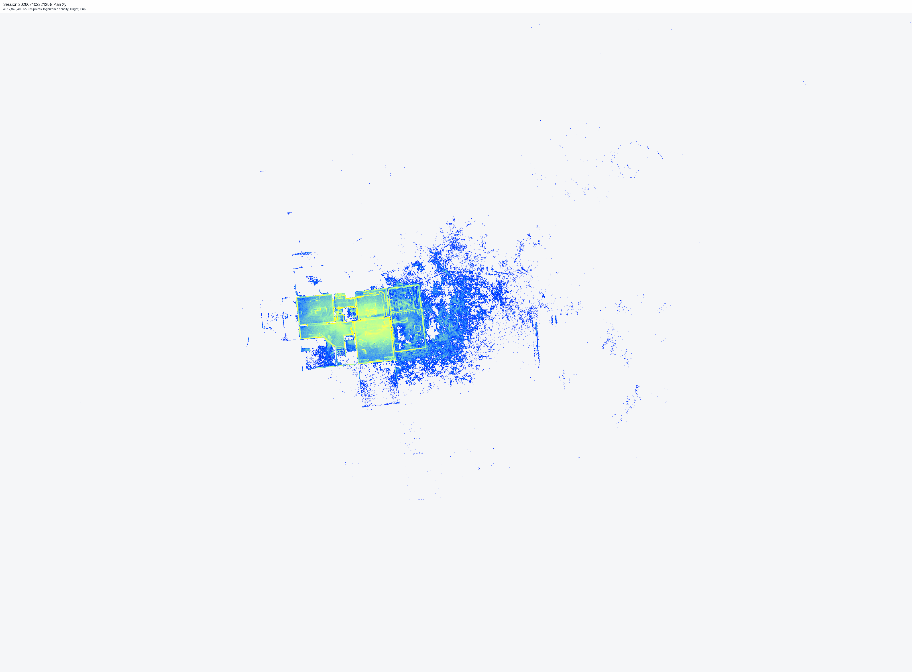
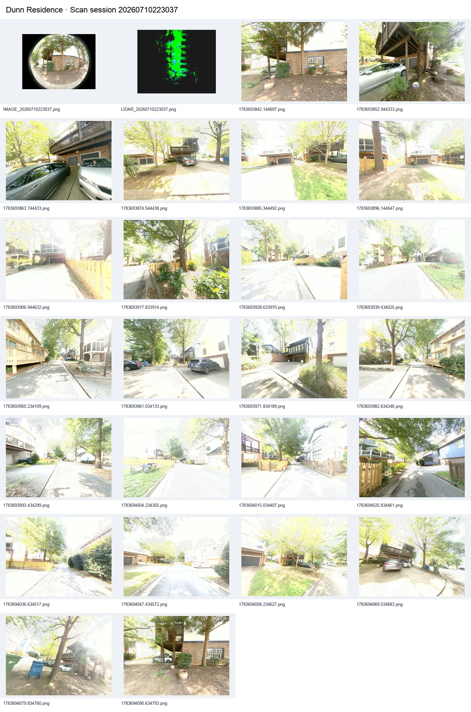
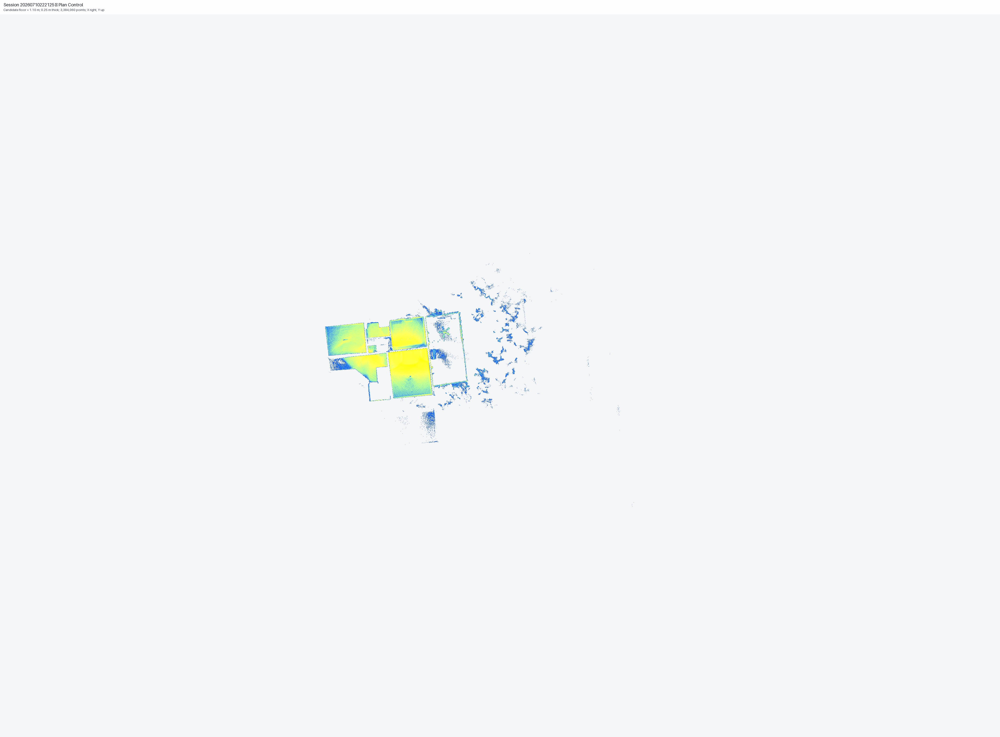
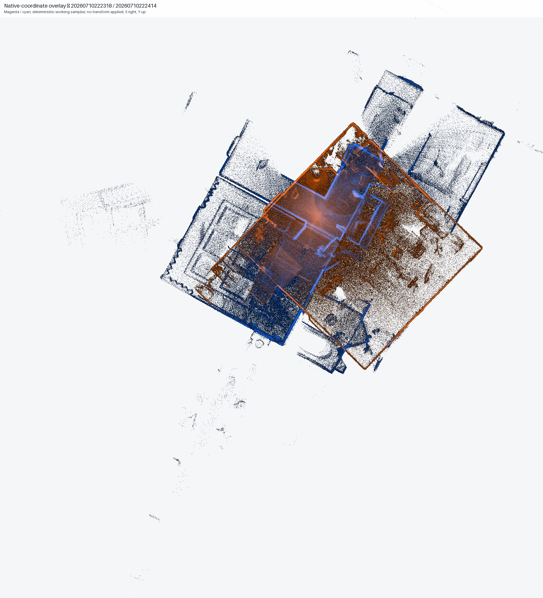

Preflight report library
Detailed analytical evidence, documented decision rules, commercial controls, and production-readiness gates. Confidential sources, exact address, coordinates, detailed bounds, and private manifests are withheld.
Evidence at a glance
Visual and control reports

Visual inspection
Plan, intensity, two elevation, and height-distribution views for each generalized scan session.

Photographic context
Exterior, driveway, street, facade, yard, deck/porch, interior, entry, and companion scan context.
CAD drafter preparation
Full checklist, areas, rooms, candidate dimensions, blocks, assets, orientation, dependencies, QA, and delivery controls.

Plan-control slices
Low-wall, plan-control, and upper-opening trial bands with contributing-point limitations.

Native-coordinate overlap
Current pair-by-pair overlays with the controlling no-registration boundary.
Source intake
Aggregate inventory, authority hierarchy, source-protection rules, confidentiality, and kickoff inputs.
Point-cloud header audit
Five-source structural validation, row-level totals, method, and limits.
Completion brief
What is complete, what is ready, and the four gates that precede native production.
Photographic context restored
The historical image-driven drafting report is restored as a public companion to the analytical scan gallery. It preserves exterior/property and interior/capture context without simplifying the existing evidence routes.
- Exterior and siteReview access, massing, facade, exterior openings, deck/porch, yard, driveway, street, and site relationships.
- Interior and entryConnect room/entry appearance to the companion scan previews and drafting checklist.
- Production controlUse the public CAD Prep report to turn observations into source, create, verify, and acceptance tasks.
Documented operating rules
- AuthorityWritten BDPC decisions and confirmed controlling project inputs outrank analytical evidence.
- Source protectionConfidential source files remain private, read-only, and outside this client OS.
- GeometryDerived views support review; they do not establish survey accuracy, accepted registration, or design authority.
- ProductionNative CAD begins only after authorization, start payment, controlling-input confirmation, and licensed runtime access.